SQL
Server数据库注入实验
实验目的
1、 通过工具注入，获得网站管理权限
2、 了解SQL注入的基本原理。
3、 了解注入工具的各种常用子功能。
实验要求
1、 认真阅读和掌握本实验相关的知识点。
2、 上机实现软件的基本操作。
3、 得到实验结果，并加以分析生成实验报告。
注：因为实验所选取的软件版本不同，学生要有举一反三的能力，通过对该软件的使用能掌握运行其他版本或类似软件的方法。
实验步骤
1、找到有注入漏洞的目标网站
在本实验中预先配置好一个目标网站（某新闻发布系统），访问该网站，并运行注入工具啊D注入工具 V2.31，在该工具的文件夹中同样有一个mdb的数据库，里面存放了预先设定好的表名、字段名、字段内容等字典。点击右边菜单中的，在检测网址处输入目标网站地址，点击，运行网站，并自动检测注册点。如下图：
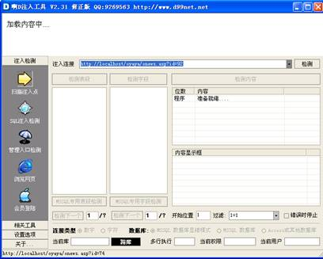
图1 注入漏洞检测
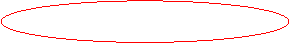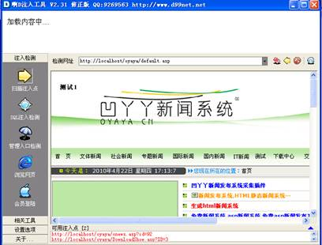
图2 注入漏洞检测结果
说明：在实际攻击中，若受网速等原因影响，目标网站打开速度过慢，可以选择打开网页，表示，停止打开网页，并检测注入点。
由上图的结果可以看出，红色标记位置给出了两个可注入点。与access数据库注入相同，可以点击任一链接，自动进入SQL注入检测（具体过程实验2有介绍，此处不再做详细介绍），如下图：
2、SQL注入检测
点击“检测”开始进行SQL注入检测，检测结果如下图：
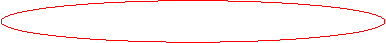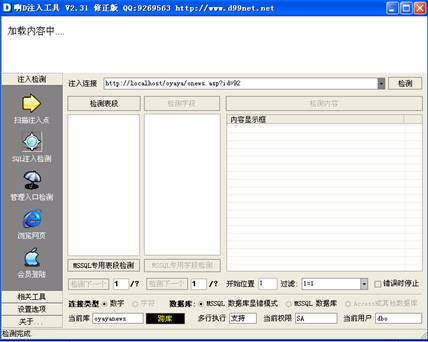
图3 注入漏洞信息
从检测结果可以看出，“检测表段”的按钮变为可用，表示有注入的可能，在数据库的类型中，判断为MSSQL数据库显错模式，即网页会显示错误信息，有经验的攻击者可以根据故意制造错误的SQL语句，通过错误信息，得到更多的信息。如下图：
 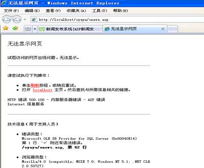
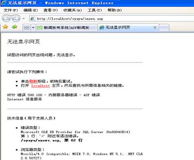
图4 检测漏洞出错界面
此外，结果还显示了数据库名称，当前使用的用户权限以及用户名等信息，这些信息都为进一步攻击提供了有力的帮助。
3、猜测表段名
点击“检测表段”，将自动检测可能得表段名。结果如下图：
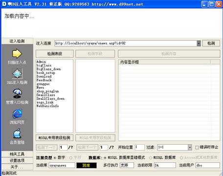
图5 检测表名
4、猜测字段名：
攻击者根据从表段名中检测出来的表段，根据自己的需要选择需要猜测的表，并开始检测字段。本例中，目的是为获取管理员权限，因此选择admin表来猜测字段。猜测字段名，同样点击“检测字段”，如下图：
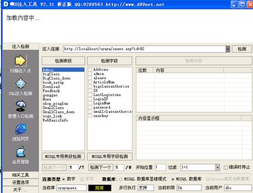
图6 检测字段名
说明：在“检测表段”和“检测字段”下有一个“MSSQL专用表段检测”“MSSQL专用字段检测”的按钮，该按钮是针对无显错模式下，读取全部表段和字段的过程。
5、猜测字段内容
与access数据库使用的工具不同，该工具可以同时对多个字段的内容进行猜测，用户可以选中需要猜测的字段名多选框，点击“检测内容”，进行内容的猜测。如下图：
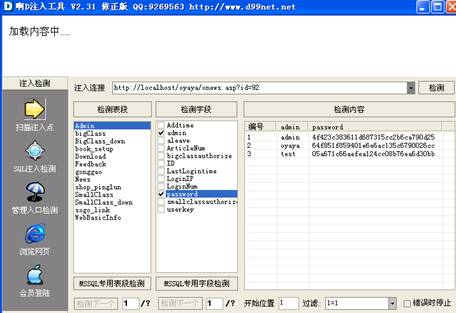
图7 选择字段猜测字段内容
此时，检测结果中会显示，猜测到得指定字段名中的所有内容。需要注意的是，从密码的内容可以看出，该用户密码并没有以明文存储，因为所猜测出来的密码是直接读取数据库中的信息。
有经验的攻击者可以根据密码的组成，猜测大致的加密方法，从本例中看，该密码有可能采用MD5加密方法进行加密。可以点击需要破解的密码，点击右键，选中“复制内容”，将密码复制下来，如下图：
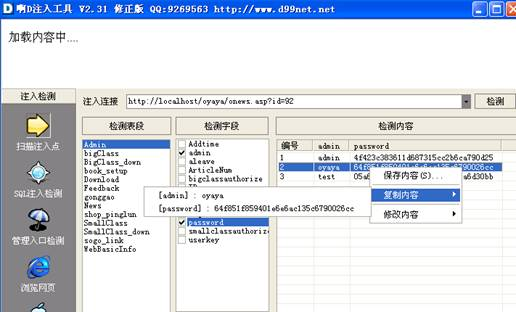
图8 解密字段内容
在网上找到MD5在线解密的网站，尝试是否能破解，经过MD5解密，得到密码原文为：oyaya。
6、以管理员身份登陆
由于该网站管理员入口在首页中有链接，因此不用猜测管理员入口，点击进入管理员入口，输入得到的用户名、密码，以管理员身份登陆。如下图：
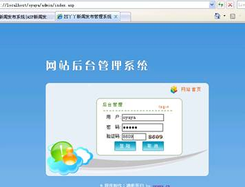
图9 后台界面
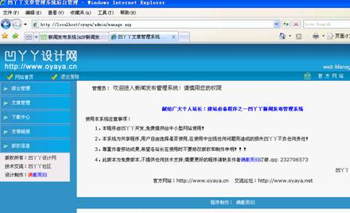
图10 成功登录
说明：若找不到管理员入口，可以使用前面讲到的“管理员入口探测”菜单进行探测，操作方法与实验二相同。
7、目录查看
在注入检测完毕以后，该软件的目录查看功能，还能帮助攻击者查看web服务器上的文件目录，点击“相关工具”中的“目录查看”，选择需要检测的位置（c、d、e等盘），点击“进行检测”进行文件目录的搜索。如下图：
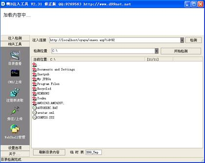
图11 web服务器目录查询
说明：标记的表示为文件夹，还可以通过双击，进入文件夹的内容。如下图：

图12 查看文件夹中的文件
8、CMD/上传
点击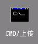按钮，在命令内容中输入CMD命令，可以执行命令，在下端的文件上传处，可以上传木马。注意：CMD命令的执行必须是获取sa权限
9、注册表读取
该功能可以读取注册表的键值来确定物理目录等信息，由于所采用的版本为试用版，部分功能不能完全体现，因为该版本中，只能读取web目录在注册表中的位置（其他版本可以修改、增加注册表的项）。如下图：
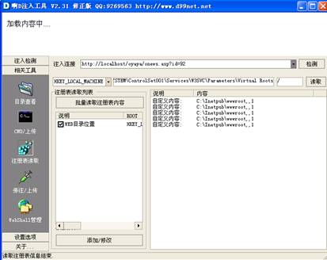
图13 注册表修改
10、字典维护
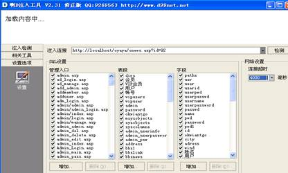因为注入工具进行猜测的依据都来自于字典（表段字典、字段字典等），因此有的注入工具还提供字典的维护，用户可根据经验的增加往字典中加入新的表段或字段。点击“设置选项”菜单，在显示的列表中可以通过勾画或者取消勾画的方式来选择进行猜测的入口地址、表段名、字段名的字典。也可以通过每列下面的“添加”、“删除”按钮来对字典中的备猜测项进行添加或删除。如下图：
图14 字典维护
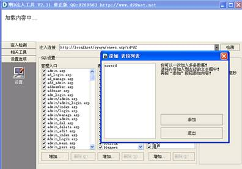
图15 字典表的维护
实验总结
SQL注入的工具远不止我们介绍的这几种，注入后的目的也不经相同，希望通过对注入工具的学习对注入的过程和用到的SQL语句有了一定的认识和了解，多数攻击都是利用注入漏洞结合其他技术（木马、病毒等技术）来实现最后的控制服务器的目的。只有了解了注入的原理和过程，才能更好地对该类攻击技术进行防范